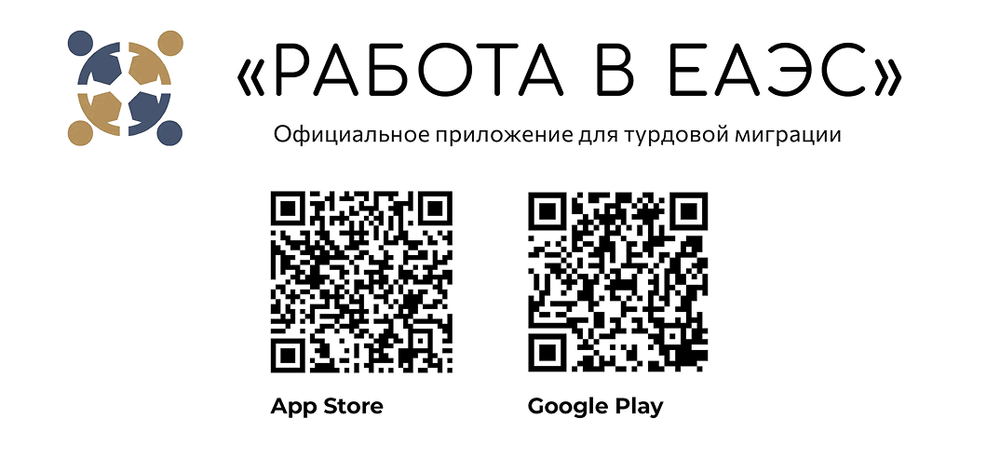
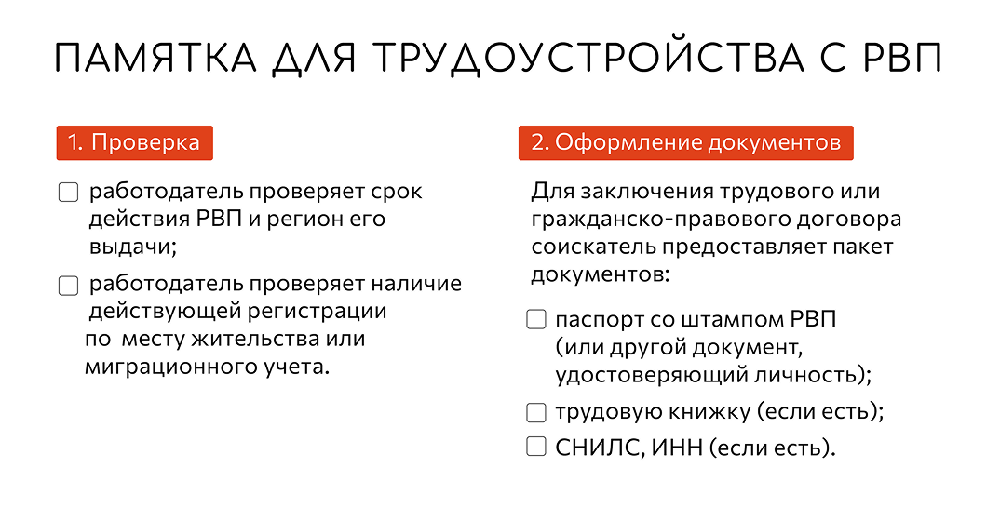
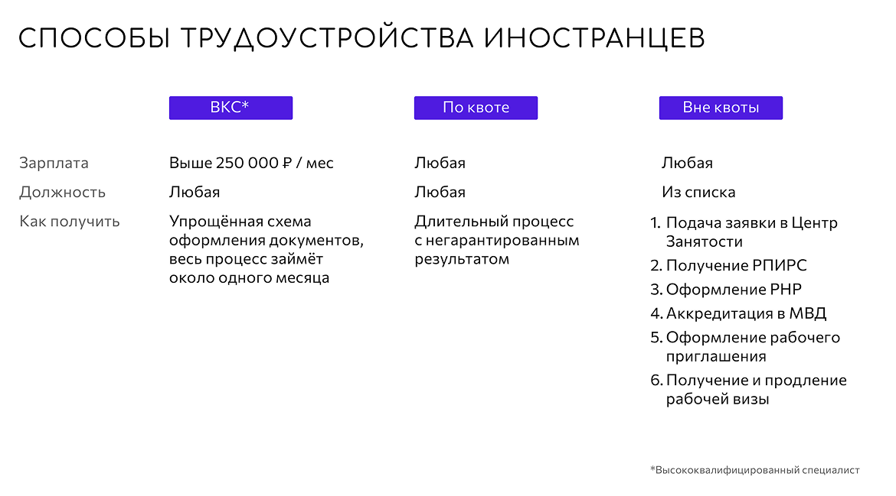
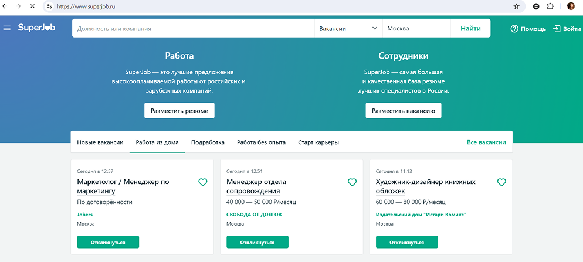
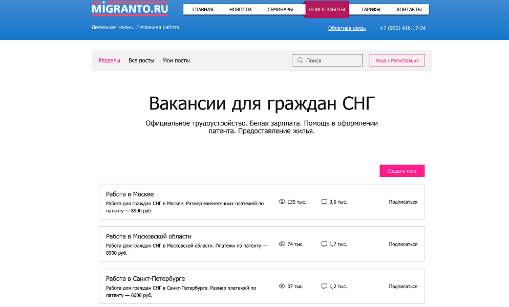
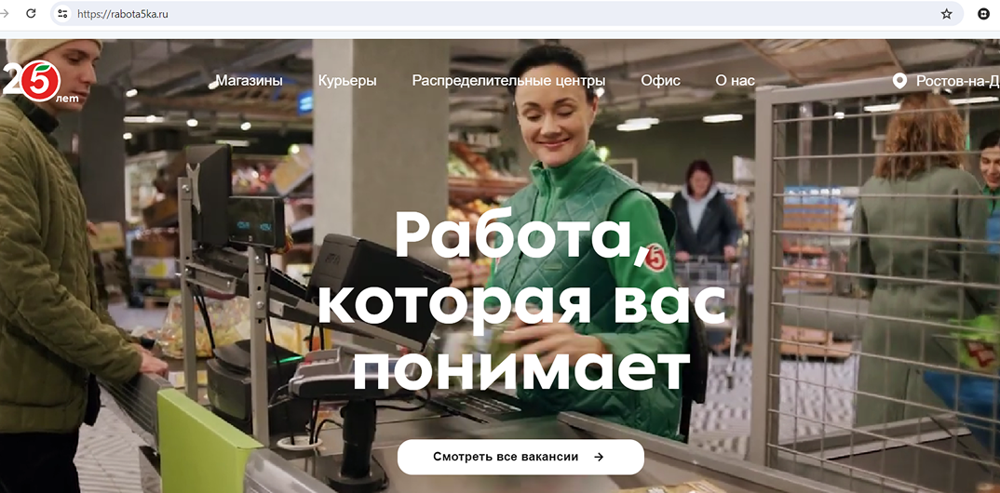

Навигация по странице:
Трудоустройство в России: документы
Россия — страна с огромным потенциалом и множеством возможностей для иностранных граждан, которые желают найти работу. Каждый год тысячи людей со всего мира приезжают в Россию в поисках работы и новых перспектив.
Например, только в 2022 г. в нашей стране работали около 4 миллионов иностранных сотрудников. В этой статье мы расскажем о том, как и где можно устроиться на работу иностранным гражданам.
Порядок трудоустройства иностранных граждан и лиц без гражданства регулируется в России Федеральным законом от 25 июля 2002 года № 115-ФЗ «О правовом положении иностранных граждан в Российской Федерации» (с изменениями). С полным текстом закона можно ознакомиться здесь.
Иностранные граждане могут устроиться на работу в России в международные и российские компании в динамично развивающихся сферах, таких как информационные технологии, туризм и гостиничный бизнес, строительство, инфраструктура, культура и искусство, спорт и т.д. Разумеется, при выборе сферы занятости важно учитывать требования к визе и разрешению на работу.
Если вы приехали из стран ЕАЭС
Если вы приехали из Беларуси, Казахстана, Армении или Киргизии, процедура трудоустройства будет такой же, как у любого россиянина. Нужно будет предъявить миграционную карту, разрешение на временное пребывание (РВП) или вид на жительство (ВНЖ). Гражданину Республики Беларусь достаточно предъявить свой белорусский паспорт.
Также вам нужно собрать стандартный пакет документов для работодателя:
- паспорт
- трудовая книжка
- страховой номер индивидуального лицевого счета (СНИЛС)
- идентификационный номер налогоплательщика (ИНН)
- документ об образовании
- полис добровольного медицинского страхования (ДМС) или обязательного медицинского страхования (ОМС)
- справка об отсутствии судимости
Для трудоустройства можно использовать мобильное приложение «Работа в ЕАЭС». Оно облегчает оформление необходимых документов онлайн, а также взаимодействие с работодателями и органами власти принимающего государства.
Мобильное приложение «Работа в ЕАЭС»
Рекомендуем ознакомиться с основами трудового законодательства:
- Между работником-иностранцем и работодателем в зависимости от типа работы, срока ее выполнения и иных обстоятельств, которые перечислены в ст. 59 Трудового кодекса РФ, заключается трудовой договор в письменной форме на неопределенный срок или срочный трудовой договор.
- Испытательный срок может составлять от 2 недель до 6 месяцев (для руководителей, заместителей, главных бухгалтеров). Для беременных женщин и женщин, которые имеют детей в возрасте до полутора лет, лиц, которые впервые поступили на работу по полученной специальности в течение 1 (одного) года со дня получения образования в среднем или высшем учебном заведении, лиц, которые приглашены на работу в порядке перевода от другого работодателя по согласованию между работодателями, лиц, которые заключили трудовой договор на срок до двух месяцев, испытательный срок не может быть установлен.
- Граждан иностранных государств — членов ЕАЭС запрещено принимать на государственную и муниципальную службу, на должности в состав экипажа судна, который плавает под Государственным флагом РФ, работу командиром гражданского воздушного судна РФ, должность главного бухгалтера или другого лица, которое ведет бухучет в организации, при отсутствии разрешения на временное проживание или вида на жительство и на некоторые другие должности.

Больше информации можно узнать на сайте Федеральной службы по труду и занятости РФ.
Если вы приехали из других стран и у вас оформлены РВП или ВНЖ
Вы можете оформлять разрешение на работу без патента. Также вы можете зарегистрировать свою фирму (например, стать индивидуальным предпринимателем), свободно въезжать в Россию и выезжать из нее. Однако работать можно только в том субъекте Российской Федерации (РФ), на который вам было выдано разрешение на временное проживание. Если вы покинули Россию на шесть месяцев и дольше, то РВП может быть аннулировано. Срок действия данных условий — три года.
Деловая и рабочая визы
Существует более десяти видов виз, по которым иностранным гражданам разрешен въезд в Россию. Одними из самых распространенных являются деловая и рабочая визы. В таблице приведены их основные характеристики.

С полным перечнем виз, их характеристиками и необходимыми для оформления документами можно ознакомиться на сайте Министерства иностранных дел: Виды виз.
Хорошая новость: иностранным студентам в России достаточно просто трудоустроиться. Для заключения трудового договора или договора гражданско-правового характера (ГПХ) нужно предоставить справку из вуза или учреждения среднего профессионального образования, которая подтверждает, что вы учитесь в России на очной форме обучения по прошедшей аккредитацию программе.
Работать рекомендуется в свободное от учебы время. Если вы завершили или прекратили обучение, нужно расторгнуть трудовой договор.
Где искать работу
При поиске работы в России вы можете воспользоваться одним из следующих способов.
Способ 1
Подходит для высококвалифицированных кадров. Срок трудоустройства до трех лет, размер заработной платы до уплаты налогов от 3 млн рублей в год. С вами заключат трудовой договор или договор ГПХ. Обратите внимание на исключения. Вы не сможете работать у индивидуальных предпринимателей (ИП), в духовных организациях (религиозных и образовательных), организациях дошкольного (детские сады, ясли, группы временного пребывания детей) и школьного образования. Вам потребуются рабочая виза и разрешение на работу. Подробности можно найти здесь.
Способ 2
Трудоустройство по квоте. Количество квот по профессиям ограничено и зависит от региона.
Способ 3
Трудоустройство без квоты ограничено списком профессий. Ознакомиться с ним можно по ссылке.
Трудовой договор предпочтительнее, чем договор ГПХ, так как он дает работнику больше гарантий и средств защиты. Среди них: оплачиваемый отпуск и больничный, охрана здоровья при выполнении трудовых функций.
Как искать работу?
Иностранные граждане могут найти работу в России несколькими способами. Вот основные из них.
Интернет, телефон
Сегодня существует множество онлайн-платформ и сайтов, на которых можно найти вакансии. Некоторые из них ориентированы исключительно на иностранных работников. Эти сайты и онлайн-платформы предоставляют информацию на разных языках и помогают с процессом трудоустройства.
На платформах типа «Superjob», «Авито» или «HH.ru» вы можете задать параметры (регион, свой возраст, наличие опыта, сфера деятельности и другие), чтобы просмотреть банк вакансий.
Superjob
ПерейтиДанный сервис отличается обширной базой вакансий и поможет в поиске высокооплачиваемой работы. У него интуитивно понятный интерфейс для выбора параметров желаемой должности. Здесь представлены такие полезные инструменты и разделы, как: составление резюме онлайн, оценка соответствия желаемой зарплаты (Зарплатомер), анонсы онлайн-курсов обучения, советы соискателям.
Отдельное внимание уделяется тем, кто только начинает свой трудовой путь. В разделе «Старт карьеры» собраны вакансии и стажировки для сотрудников без опыта работы.
Работа в крупных городах
Для поиска работы в мегаполисах, областных центрах страны действует онлайн-площадка «Работа.ру». На ней собраны вакансии по профессиям и предложения напрямую от работодателей, интересующего вас региона. Выберите город или все регионы, в строке поиска укажите «работа для мигрантов», а в фильтрах уточните параметры поиска: опыт, график, зарплата и другие характеристики.
В отдельной вкладке представлены вакансии от «Сбера» — крупнейшая финансовая организация страны. Для подачи резюме нужно зарегистрироваться через соцсети, по номеру мобильного телефона или адресу электронной почты.
Вакансии для граждан СНГ
ПерейтиДанный портал является общероссийской информационно-образовательной рекрутинговой площадкой для иностранных граждан из стран СНГ. Он содействует трудоустройству мигрантов. Эксперты проводят онлайн-семинары по миграционному законодательству. На форуме для работодателей и соискателей можно задать вопросы сотрудникам кадровых и визовых служб.
Рекрутинговые агентства и работодатели
Рекрутинговые (или кадровые) агентства предоставляют доступ к вакансиям, которые не рекламируются публично, могут выступать посредниками при переговорах о заработной плате и условиях работы, гарантируя, что вы получите справедливую зарплату.
При обращении в агентство ваши навыки и опыт тщательно оценят, чтобы определить вакансии, которые наилучшим образом соответствуют вашим способностям. Затем вас свяжут с работодателем. Обратите внимание на необходимость оплатить услуги агентства. Чтобы выбрать компанию с хорошей репутацией, обратитесь на онлайн-портал, где собраны вакансии ключевых агентств России.
Многие компании и организации, особенно те, которые имеют деловые связи с другими странами, активно нанимают иностранных работников, размещают на своих сайтах актуальные вакансии. Ищите известные компании в интересующей вас сфере напрямую. Примером из сферы торговли может служить компания «Пятерочка», которая работает во всех регионах страны. На сайте укажите город, найдите раздел «Вакансии», выберите подходящую должность и впишите свои контактные данные.
Общественные связи и рекомендации
Общение с людьми, которые уже работают в России, может быть полезным способом найти вакансии и получить информацию о предложениях работы, которые не всегда публикуются в общем доступе. Обсудите опыт трудоустройства в своих диаспорах, группах соотечественников.
Если у вас остались вопросы, обратитесь на форумы для соискателей-иностранцев и работодателей, например «Форум для иностранных граждан и работодателей»: список вопросов от иностранных граждан. Для начала общения достаточно зарегистрироваться.
Русская пословица гласит: «Без труда не вытащишь и рыбку из пруда». Сложность оформления документов для трудоустройства, поиска работы и самих трудовых будней с лихвой оправдается результатами: доходом и самореализацией.
Вам следует учесть требования и правила получения виз или разрешений на работу, когда вы устраиваетесь на работу в России. Будьте готовы предоставить необходимые документы и следовать процедурам. Также рекомендуется обратиться за помощью к специалистам по вопросам миграции, рекрутерам или юристам, чтобы получить конкретную информацию и советы.

Собеседование
В подавляющем большинстве случаев перед получением работы вы пройдете собеседование (иногда несколько). Это может быть личная встреча в офисе или онлайн-встреча с руководителем или начальником отдела кадров. Если вы направили резюме, то о вас уже есть некоторая информация. Если нет, то самое время представиться и «предложить» себя на рынке кадров.
Собеседование обычно состоит из нескольких этапов:
-
1
Приглашение на собеседование и подготовка кандидата. Вам сообщат время и место встречи. Изучите информацию о компании, продумайте ответы на типичные вопросы для сферы вашего трудоустройства.
-
2
Приветствие и представление. Этап, когда обе стороны, которые участвуют в собеседовании, коротко рассказывают о себе, задают вопросы для создания комфортной обстановки.
-
3
Вопросы о квалификации и опыте. Работодатель спросит о вашем опыте работы, квалификации, навыках. Вы можете представить свое портфолио, рассказать о достижениях и проектах.
-
4
Поведенческие вопросы или тесты. Работодатель может задать вопросы, которые направлены на определение мотивации, ваших личностных качеств и способности решения проблем. Будьте готовы приводить реальные примеры и демонстрировать свои навыки в различных ситуациях. Этот этап может быть заменен тестированием, ролевой игрой или практическим заданием.
-
5
Вопросы соискателя. В конце собеседования задайте интересующие вас вопросы: о компании, своих правах и обязанностях, содержании трудового договора, условиях работы.
По итогам собеседования работодатель сообщит вам, когда ожидать обратной связи.
Виды трудовых договоров
Отношения работодателя и работника, их права и обязанности регулирует Трудовой кодекс РФ. С его текстом можно ознакомиться здесь.
Срочный
На срок не более пяти лет (обязательно указывают дату прекращения трудовых отношений)
Бессрочный
На неопределенный срок
Договор гражданско-правового характера
Заключается для выполнения конкретной разовой работы к определенному сроку.
Пример трудового договора с гражданином Узбекистана.
В договоре указывают: фамилию, имя (отчество, при наличии) работника и наименование работодателя, место и дату заключения договора, место работы, трудовую функцию, дату начала работы. В случае заключения срочного трудового договора указывают срок его действия, оплату (размер тарифной ставки или должностного оклада, доплаты, надбавки, поощрительные выплаты), рабочее время и время отдыха, особый характер работы (например, разъездной), условия труда на рабочем месте, гарантии и компенсации, персональные данные.
Трудовой договор заключается в письменной форме, в двух экземплярах, каждый из которых подписывается сторонами. Один экземпляр трудового договора передается работнику, другой хранится у работодателя.
Договор ГПХ отличается от других отсутствием ряда существенных условий (см. таблицу). Об этом необходимо помнить!
Подробнее читайте здесь.
Помимо Трудового кодекса РФ и условий трудового договора, вам необходимо соблюдать правила внутреннего трудового распорядка и другие локальные нормативные акты работодателя.
Рабочий график и календарь: рабочий день в России
В России несколько графиков работы:
Пяти- или шестидневная рабочая неделя
Работа с понедельника по пятницу/субботу, пятидневка, шестидневка.
Частичная занятость
Работа на неполный день, например с 09:00 до 13:00.
Гибкий график
Вы должны выполнять определенный объем работы, но работодатель не ждет, что вы будете проводить все рабочие часы в офисе.
Сменный график
Вы работаете с напарниками в разные дни, время суток, составляя график наперед, например, сутки через трое.
Вахтовый метод
Периоды работы от двух недель чередуются с равноценными или более долгими периодами отдыха.
Также работа может быть дистанционной (онлайн, удаленной), когда в рабочее время вы присутствуете онлайн и выполняете рабочие обязанности, то есть, не находитесь в офисе компании
Длительность рабочей недели в России — не более 40 часов (при сверхурочной работе прибавка к длительности не может превышать четырех часов в течение двух дней подряд, суммарно 120 часов в год). При пятидневке принято работать по восемь часов в день с 08:00 до 17:00 или 09:00 до 18:00. Выходными днями чаще являются суббота и воскресенье, при шестидневке — всегда воскресенье.
Запрещается работать в нерабочие праздничные дни:
1, 2, 3, 4, 5, 6 и 8 января
Новогодние каникулы
7 января
Рождество Христово
23 февраля
День защитника Отечества
8 марта
Международный женский день
1 мая
Праздник Весны и Труда
9 мая
День Победы
12 июня
День России
4 ноября
День народного единства
Исключение составляет занятость в сфере услуг и развлечений, когда работа в эти дни приносит высокую прибыль компании, и на предприятии с непрерывным производством. Надбавка за сверхурочную работу рассчитывается отдельно. Согласно требованиям законодательства, сверхурочная работа оплачивается следующим образом: в полуторном размере — за первые два часа; в двойном размере — за последующие часы.
Работа в ночное время (с 22:00 до 06:00) также оплачивается иначе. К зарплате за этот день полагается прибавка минимум в 20 %. Вас никто не вправе заставить работать две смены подряд. Любой сменный работник обязан отдыхать не меньше 42 часов подряд хотя бы раз в неделю.
«Делу время, потехе час» — говорит русская пословица, которая подчеркивает приоритет труда над отдыхом.
В России обеденный перерыв обычно с 13:00–14:00. Как раз час, как в пословице! На это время не назначают важные встречи.
Длительность отпуска зависит от сферы деятельности. По трудовому договору (не ГПХ) работнику положено 28 дней оплачиваемого отпуска в год. При необходимости с согласия работодателя можно взять отпуск без сохранения заработной платы (отпуск «за свой счет»).
Деловой этикет и дресс-код
Российский деловой этикет основан на международных правилах, но включает ряд собственных традиций. Учитывайте эти особенности, и тогда вы успешно интегрируетесь в деловое общество и сможете поддерживать профессиональные отношения с коллегами и партнерами.
Этикет устного общения
Письменный деловой этикет
Правила относятся к написанию обычных и электронных писем. На электронные письма рекомендуется отвечать в течение суток с момента получения. Детально изучить правила и примеры писем можно здесь.
Рабочие чаты
Во всех организациях существуют рабочие чаты с коллегами и руководителями в соцсетях или мессенджерах. В них принято соблюдать корректность в общении: при присоединении к чату изучите его правила, пишите в рабочее время короткие и четкие сообщения, отмечайте адресата, если сообщение относится к конкретному человеку. Давайте полные ответы на сообщения, не прибегайте к избыточному использованию ссылок, не записывайте голосовые и видеосообщения.
Больше подробностей можно найти в статье: Правила корпоративных чатов - Эффективная деловая переписка в мессенджерах. Соблюдение этикета поможет вам успешно общаться с коллегами и избежать недоразумений.
Как выбрать одежду для работы?
Внешнему виду и опрятности сотрудников придается большое значение.
В России есть пословица: «Встречают по одежке, провожают по уму». Она подчеркивает не только важность ваших личностных качеств, но и значение первого впечатления от вашего внешнего вида.
Форма одежды (дресс-код)
Форма одежды зависит, в первую очередь, от вашей должности.
Если вы работаете в офисе
Необходим деловой гардероб или одежда в стиле кежуал (от англ. — casual — повседневный). В помещении необходимо переобуться. Спортивные элементы в одежде меньше всего подходят для офисного стиля.
Работодатель может устанавливать требования к внешнему виду в локальных нормативных актах — тогда их соблюдение является обязательным.
Другие типы занятости
В некоторых сферах услуг, в области медицины, транспорта и т. д. используется униформа. Зачастую она бывает с логотипом компании. Вам могут выдать брендированные канцелярские и иные принадлежности для работы. Если вам не скажут об этом при трудоустройстве, лучше всего самостоятельно спросить о требованиях к внешнему виду.
Дресс-код для мужчин
В классическом деловом стиле принято носить костюм (зимой темного цвета, летом чуть светлее). Предпочтительно, чтобы рубашка была более светлого тона. Допускается галстук сдержанного цвета и дизайна. Одежда должна быть отглаженной.
Обувь должна быть чистой и аккуратной. Часто используется классический черный или коричневый цвет. Носки должны быть одного цвета с брюками и обувью.
Дресс-код для женщин
Женщины в деловой обстановке часто носят пиджак или блейзер со строгими брюками или юбкой ниже колена с рубашкой или блузой. Цвета могут быть спокойными, допустимы акценты в виде аксессуаров. Даже в жаркие дни не рекомендуется носить длину мини и открывать плечи.
Обувь следует выбирать закрытую на невысоком каблуке. Цвет колготок и обуви должен гармонировать с одеждой.
Важно использовать сдержанный макияж, делать аккуратную прическу. Лучше носить минималистичные украшения.

Если религиозная или этническая принадлежность регламентирует внешний вид работающей женщины (длинные платья, головные платки), вы, скорее всего, не встретите запрета на подобный дресс-код в России.
Помимо изучения вышеперечисленных рекомендаций об этикете и дресс-коде полезным будет понаблюдать за привычками сотрудников конкретной компании, и тогда вы сможете в лучшей мере соответствовать правилам делового мира.
Иностранцев с удовольствием принимают на работу в России. Несмотря на большое количество документов, которые нужно для этого собрать, здесь вас ждет новый опыт, знания, связи и возможности для реализации. Уделите внимание поиску вакансий через специализированные ресурсы, изучите страну и российский рынок труда, осваивайте язык для эффективного общения с работодателями и коллегами.
Ваша активность, ответственность и готовность к адаптации в новой стране также сыграют ключевую роль в успешном трудоустройстве в России. Добро пожаловать!